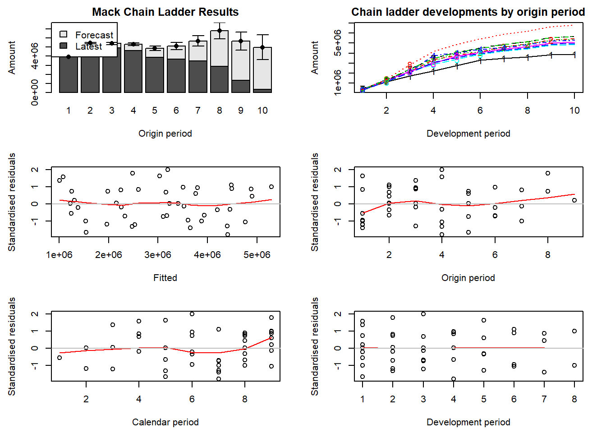
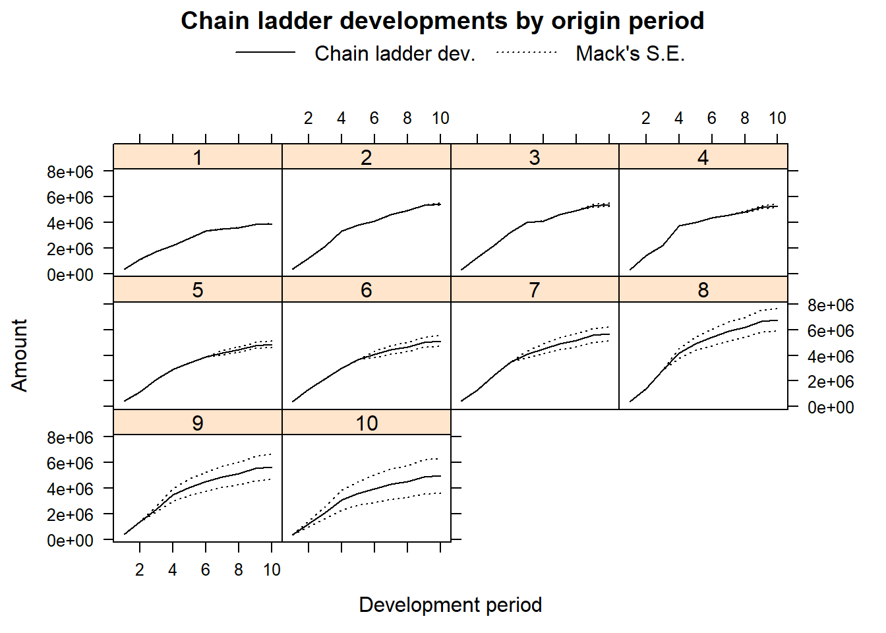

8 Mack’s Chain-Ladder calculations
The ChainLadder package can easily perform Mack’s calculations (see the lecture notes by Katrien for more details).
M <- MackChainLadder(my_triangle_cum, est.sigma = "Mack")
M## MackChainLadder(Triangle = my_triangle_cum, est.sigma = "Mack")
##
## Latest Dev.To.Date Ultimate IBNR Mack.S.E CV(IBNR)
## 1 3,901,463 1.0000 3,901,463 0 0 NaN
## 2 5,339,085 0.9826 5,433,719 94,634 75,535 0.798
## 3 4,909,315 0.9127 5,378,826 469,511 121,699 0.259
## 4 4,588,268 0.8661 5,297,906 709,638 133,549 0.188
## 5 3,873,311 0.7973 4,858,200 984,889 261,406 0.265
## 6 3,691,712 0.7223 5,111,171 1,419,459 411,010 0.290
## 7 3,483,130 0.6153 5,660,771 2,177,641 558,317 0.256
## 8 2,864,498 0.4222 6,784,799 3,920,301 875,328 0.223
## 9 1,363,294 0.2416 5,642,266 4,278,972 971,258 0.227
## 10 344,014 0.0692 4,969,825 4,625,811 1,363,155 0.295
##
## Totals
## Latest: 34,358,090.00
## Dev: 0.65
## Ultimate: 53,038,945.61
## IBNR: 18,680,855.61
## Mack.S.E 2,447,094.86
## CV(IBNR): 0.13# get development factors
M$f## [1] 3.490607 1.747333 1.457413 1.173852 1.103824 1.086269 1.053874
## [8] 1.076555 1.017725 1.000000# get the estimates for \sigma^2
M$sigma^2## [1] 160280.3275 37736.8550 41965.2130 15182.9027 13731.3239 8185.7716
## [7] 446.6166 1147.3660 446.6166# get the full triangle
M$FullTriangle## dev
## origin 1 2 3 4 5 6 7 8
## 1 357848 1124788 1735330 2218270 2745596 3319994 3466336 3606286
## 2 352118 1236139 2170033 3353322 3799067 4120063 4647867 4914039
## 3 290507 1292306 2218525 3235179 3985995 4132918 4628910 4909315
## 4 310608 1418858 2195047 3757447 4029929 4381982 4588268 4835458
## 5 443160 1136350 2128333 2897821 3402672 3873311 4207459 4434133
## 6 396132 1333217 2180715 2985752 3691712 4074999 4426546 4665023
## 7 440832 1288463 2419861 3483130 4088678 4513179 4902528 5166649
## 8 359480 1421128 2864498 4174756 4900545 5409337 5875997 6192562
## 9 376686 1363294 2382128 3471744 4075313 4498426 4886502 5149760
## 10 344014 1200818 2098228 3057984 3589620 3962307 4304132 4536015
## dev
## origin 9 10
## 1 3833515 3901463
## 2 5339085 5433719
## 3 5285148 5378826
## 4 5205637 5297906
## 5 4773589 4858200
## 6 5022155 5111171
## 7 5562182 5660771
## 8 6666635 6784799
## 9 5544000 5642266
## 10 4883270 4969825# get Mack SE
M$Mack.S.E## dev
## origin 1 2 3 4 5 6 7 8
## 1 0 0.0 0.0 0.0 0.0 0.0 0.0 0.0
## 2 0 0.0 0.0 0.0 0.0 0.0 0.0 0.0
## 3 0 0.0 0.0 0.0 0.0 0.0 0.0 0.0
## 4 0 0.0 0.0 0.0 0.0 0.0 0.0 52792.3
## 5 0 0.0 0.0 0.0 0.0 0.0 198502.3 215087.7
## 6 0 0.0 0.0 0.0 0.0 247204.5 337617.1 359529.7
## 7 0 0.0 0.0 0.0 250737.0 381475.0 468090.6 496372.2
## 8 0 0.0 0.0 378275.3 524308.8 648532.0 745375.5 787969.0
## 9 0 0.0 241429.5 489488.2 626722.3 739749.5 832421.5 878986.8
## 10 0 246656.5 486185.5 776148.3 940317.8 1066053.3 1175373.2 1239733.2
## dev
## origin 9 10
## 1 0.00 0.00
## 2 0.00 75535.04
## 3 94224.87 121698.56
## 4 109209.66 133548.85
## 5 247694.18 261406.45
## 6 397609.80 411009.70
## 7 543209.17 558316.86
## 8 855493.24 875327.51
## 9 951273.66 971257.81
## 10 1337625.66 1363154.91# split parameter and process risk
M$Mack.ProcessRisk## dev
## origin 1 2 3 4 5 6 7
## 1 0 0.0 0.0 0.0 0.0 0.0 0.0
## 2 0 0.0 0.0 0.0 0.0 0.0 0.0
## 3 0 0.0 0.0 0.0 0.0 0.0 0.0
## 4 0 0.0 0.0 0.0 0.0 0.0 0.0
## 5 0 0.0 0.0 0.0 0.0 0.0 178061.9
## 6 0 0.0 0.0 0.0 0.0 225149.0 305242.1
## 7 0 0.0 0.0 0.0 229965.3 347243.8 423348.5
## 8 0 0.0 0.0 346712.1 478565.2 588507.1 673019.3
## 9 0 0.0 226818.1 457429.1 583978.4 686644.2 770169.4
## 10 0 234816.3 462236.8 736127.5 890564.8 1007785.3 1109441.4
## dev
## origin 8 9 10
## 1 0.00 0.00 0.00
## 2 0.00 0.00 48831.59
## 3 0.00 75051.86 90524.39
## 4 45268.05 89011.23 102622.02
## 5 192596.65 219266.58 227879.86
## 6 324745.07 357178.99 366582.08
## 7 448603.17 489044.92 500202.46
## 8 711125.36 770192.15 785740.55
## 9 813005.07 878613.76 895570.40
## 10 1170033.59 1261669.94 1284881.67M$Mack.ParameterRisk## dev
## origin 1 2 3 4 5 6 7
## 1 0 0.00 0.00 0.0 0.00 0.0 0.00
## 2 0 0.00 0.00 0.0 0.00 0.0 0.00
## 3 0 0.00 0.00 0.0 0.00 0.0 0.00
## 4 0 0.00 0.00 0.0 0.00 0.0 0.00
## 5 0 0.00 0.00 0.0 0.00 0.0 87733.28
## 6 0 0.00 0.00 0.0 0.00 102068.4 144265.72
## 7 0 0.00 0.00 0.0 99925.17 157939.6 199711.92
## 8 0 0.00 0.00 151271.1 214184.84 272494.2 320358.72
## 9 0 0.00 82714.94 174233.5 227486.40 275225.6 315855.40
## 10 0 75503.24 150709.93 246013.0 301814.19 347618.2 388126.15
## dev
## origin 8 9 10
## 1 0.00 0.00 0.00
## 2 0.00 0.00 57628.28
## 3 0.00 56969.68 81338.03
## 4 27163.04 63275.20 85463.55
## 5 95756.27 115215.35 128078.49
## 6 154279.84 174690.36 185867.04
## 7 212462.98 236455.63 248022.60
## 8 339405.23 372387.88 385759.04
## 9 334126.58 364636.04 375892.78
## 10 409829.10 444332.52 455269.61sqrt(M$Mack.ProcessRisk^2+M$Mack.ParameterRisk^2)## dev
## origin 1 2 3 4 5 6 7 8
## 1 0 0.0 0.0 0.0 0.0 0.0 0.0 0.0
## 2 0 0.0 0.0 0.0 0.0 0.0 0.0 0.0
## 3 0 0.0 0.0 0.0 0.0 0.0 0.0 0.0
## 4 0 0.0 0.0 0.0 0.0 0.0 0.0 52792.3
## 5 0 0.0 0.0 0.0 0.0 0.0 198502.3 215087.7
## 6 0 0.0 0.0 0.0 0.0 247204.5 337617.1 359529.7
## 7 0 0.0 0.0 0.0 250737.0 381475.0 468090.6 496372.2
## 8 0 0.0 0.0 378275.3 524308.8 648532.0 745375.5 787969.0
## 9 0 0.0 241429.5 489488.2 626722.3 739749.5 832421.5 878986.8
## 10 0 246656.5 486185.5 776148.3 940317.8 1066053.3 1175373.2 1239733.2
## dev
## origin 9 10
## 1 0.00 0.00
## 2 0.00 75535.04
## 3 94224.87 121698.56
## 4 109209.66 133548.85
## 5 247694.18 261406.45
## 6 397609.80 411009.70
## 7 543209.17 558316.86
## 8 855493.24 875327.51
## 9 951273.66 971257.81
## 10 1337625.66 1363154.91Again, the package can nicely visualize the results.
plot(M)
plot(M,lattice=TRUE)
Exercise:
- interpret the plots. What do you see?